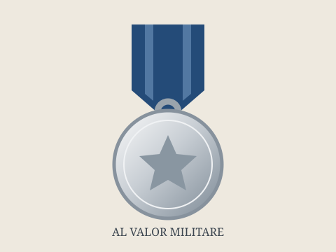
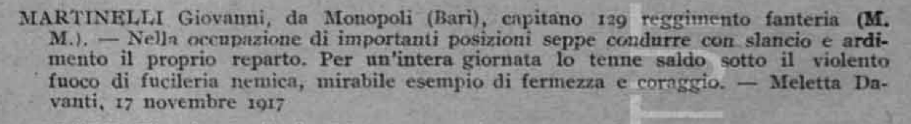

Giovanni Martinelli, da Monopoli (Bari), capitano del 129° reggimento fanteria. L’onorificenza è indicata come medaglia d’argento al valor militare dalla famiglia che ha fornito il ritaglio.
La motivazione
«Nella occupazione di importanti posizioni seppe condurre con slancio e ardimento il proprio reparto. Per un’intera giornata lo tenne saldo sotto il violento fuoco di fucileria nemica, mirabile esempio di fermezza e coraggio. — Meletta Davanti, 17 novembre 1917».
Il documento originale
Tocca l’immagine per ingrandirla e leggere il testo alla risoluzione disponibile.


Fonte e criteri di trascrizione
Riproduzione fornita dall’archivio familiare il 15 novembre 2026. Il ritaglio non mostra il titolo della pubblicazione, la data del provvedimento né l’intestazione della classe di medaglia: questi riferimenti restano da integrare. Il 17 novembre 1917 è la data dell’azione, non necessariamente quella del conferimento.
La trascrizione riunisce le parole spezzate a fine riga. La sigla «(M. M.)» dopo il reparto è conservata nell’immagine e non viene interpretata. L’icona è illustrativa.
Leggi il diario di guerra e il contesto delle Melette · Consulta la genealogia